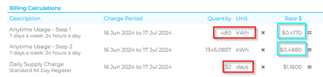

High Bill Checklist
§ Is this the first actual bill after estimated bill cycle bills[RD1] ?
§ Has the customer received an estimated read?
o Network Estimation = ACTUALF
o Estimated Billing Cycle = INVOICE_EST
§ If so, how many of the previous bills have been estimated?
§ Find the last actual reading and advise this is accurate usage from ‘X’ date to ‘X’ date.
§ Has the customer been billed for a longer period than usual?
§ Has the customer been billed for a different duration due to the Estimated Billing Cycle? i.e. 31 days instead of 91 days.
§ Has the customer been back billed? Is this wash up data[RD2] ?
§ Has the customer been charged any reconnection or disconnection fees?
§ Has the customer missed out on a discount for any reason? (final bill etc)
§ Is the customer on a Stepping Plan – Step 1 and Step 2?
o Only for basic meters
o The first xyz amount of kwh’s per day are charged at x rate
o The next xyz amount of kwh's per day are then charged at x rate
§ To work out the first step, take the total kWh amount and divide this by the number of days
§ 480 kWhs / 32 days = 15 kwhs (Step 1) charged at $0.4170, remaining kWh’s (Step 2) charged at $0.4880 
§ Does this bill go over a rate increase?
§ Is this the first full billing period at the new rate?
§ Does the customer have a concession card?
§ If so, check the concession tab to see that the card is valid. Also, check the expiry date or if the end date field is populated.
o Compare the graphs on the invoice with how many people live at the address
o Compare their consumption daily load on previous invoices
§ For winter bills go over the use of heaters, electric blankets etc
§ If TOU, check AM reads to specify when the customer is using most of their electricity
§ Compare specific peak/off peak usage to previous bills.
§ If there is a spike in usage on a particular meter, check what’s attached to that meter (i.e., peak meter is home appliances, off peak meter is either hot water system, pool pump etc)
§ If off peak meter spike, check hot water system – leaks, times etc
§ If peak meter spike, is the customer maybe doing chores during the peak hours? Can these be done during off-peak times instead?
§ Is it school holidays where more people have been home?
§ Any visitors? Renovations? etc
§ Has the customer bought any new appliances recently? If so, this could be contributing to the increase in usage.
§ If the customer has a basic meter, advise them to take a self-read (not useful for TOU)
§ Use the four clock faces to record the numbers from left to right. If the hand is between two numbers, use the lower number.
o You can also direct customers to the 1st Energy Website on how to read their meter https://1stenergy.com.au/how-to-read-your-meter/
o REMEMBER: If the customer is on an estimated billing cycle and the read is due to the INVOICE_EST, a meter photo will not be useful
§ When were everyday appliances last replaced?
§ Advise customer they have the option of contacting an electrician to get an Energy Audit to check for any faulty appliances.
§ Only to be used for estimated TOU reads.
§ This is where we ask the network to verify the information they have sent through.
§ BEFORE DOING THIS: Check usage tab to see how much is estimated. It might just be 1 day and therefore may not make that much of a difference
[RD1]Invoice data, meter data(re-connections, disconnections), seasonality, holidays, billing data(bill cycles, etc.,), customer payment history, appliances connected to meter(if available else we need to take data from user through smart communication to exaplain him the reason behind high bill), rate cards, promos/concessions/discounts, type of customer and no: of people living(if available), type of enery-Time of Use-Charges applied with respect to timestamp to track energy consumption in time slots
[RD2]What is wash up data?